ホーム → 補論 → 文法 → 日本人のための日本語 → 日本人のため：3
第１章と第２章で学校文法とは異なる日本語文法の枠組みを説明しました。ここで、もう一度おさらいしてみましょう。
日本語文の基本構造は述語を中心にいくつかの成分から構成され、それらの成分は格助詞によって結ばれています。格成分（格助詞によって述語と結ばれた成分）は述語との関係から必須成分と随意成分に分かれ、述語と必須成分との組み合わせは文型と呼ばれます。日本語文のコトは文型を中心に随意成分が加わるかたちで形成されます。コトは文の言語事実を形成しますが、文としてはまだ未完成です。コトをどのように考え、どのように聞き手に伝えるのかというムードの表現が必要になるからです。このムードの表現の一つが「～は」であり、コトのなかから主題となる成分を選び、提示するわけです。主題が提示されると、残った部分は主題について説明する部分となり、解説と呼ばれます。この「主題－解説」という関係が確立されることで、日本語文としての姿ができあがります。なお、ムードの表現の多くは文末につづきますが、これについては第７章で詳しく説明します。
これらのことを図にまとめると、次のようになります。
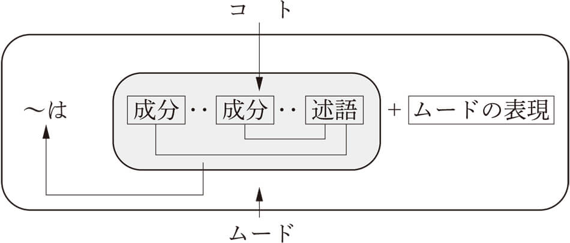このなかで、日本語文のコトを形成する述語は「家」に喩えれば土台であり、非常に重要な要素となります。第３章では、この述語のなかで中心的な存在である動詞について考えていくことにします。
日本語を研究していると、日本語は日本人の文化そのものであると感じることが多くあります。自然と共存して暮らしてきた日本人の人生観そのものが日本語に色濃く投影されているからなんですね。その一つが自動詞と他動詞の使い方に見られます。自動詞は「雨が降る」や「太陽が輝く」など、自然現象を表すときによく使われ、物事が自然に生じることを表します。一方、他動詞は、「子供が絵を描く」や「父親が庭を掃除する」など、人間の行動が起点となり、物事を引き起こすことを表します。一言で言えば、自動詞は自然中心であり、他動詞は人間中心の見方に立つと言えるわけですね。このような観点から、日本語を見つめてみると、人間に関わることでも自動詞によって表されることが多いのに気づきます。このことを、欧米語の代表である英語とくらべてみると一目瞭然です。英語では他動詞で表される事態が、日本語では自動詞で表されるんですね。以下は、拙著『考えて、解いて、学ぶ 日本語教育の文法』からの引用です。

いかがでしょうか。日本語では、人間の活動も大きな自然界の流れの一つとしてとらえられ、自動詞で表されるわけです。これに対して、英語では、あくまで人間によって引き起こされた現象として表されているんです。人間の動作のすべてが自動詞によって表されるわけではありませんが、少なくとも英語よりは自動詞で表されることが多いと言えそうです。このような発想の違いがまさに日本語文法のしくみに大きな影響を与えているんですね。この章では、このような自動詞と他動詞の関係を言語学的な観点から説明していきます。
自動詞と他動詞の区別はそれほど難しくはありません。「雪が降る」「風が吹く」「釘が錆びる」など目的語がない動詞が自動詞、「弟が弁当を食べる」「子供がおもちゃを壊す」「母が料理を作る」など、目的語を伴うものが他動詞となるわけです。目的語には通常ヲ格がついていますので、ヲ格成分があれば、他動詞と考えていいでしょう。ただし、例外があります。それは、主体の移動を表す動詞（移動動詞）においては、移動の起点や通過点などの場所がヲ格で表され、これらは目的語とは考えられないからです。
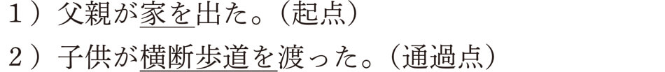これらの文における「家」と「横断歩道」が目的語ではない証拠として、ヲ格成分を主語にした受身文が成立しないという点が挙げられます。
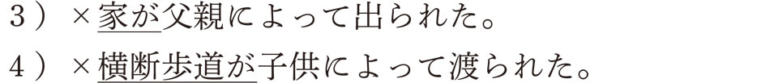これはどういうことかと言うと、移動動詞における「家」や「横断歩道」は移動に伴う場所であって、動作の働きかけがおよぶ対象ではないからです。動詞によっては、同じ「家」と「横断歩道」でも動作の対象（目的語）となるものがあります。たとえば、次の例文をご覧になってください。
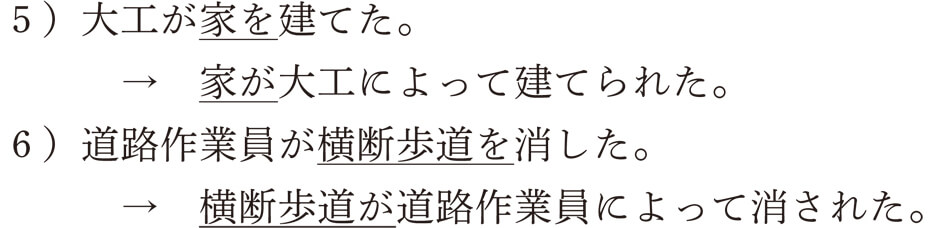ここにおける「家」と「横断歩道」には「建てる」と「消す」という動作が直接およんでいることがわかりますね。したがって、ヲ格成分は目的語になり、これらを主語にした受身文が可能になっているわけです。
起点や通過点がヲ格となる移動動詞には、「出る」「出発する」「離れる」「飛び立つ」（以上、起点）や「歩く」「渡る」「走る」「通る」「飛ぶ」（以上、通過点）などがあります。これらの動詞はすべて自動詞に分類されますので、注意する必要があります。
最後に、この自動詞と他動詞の違いをまとめると、以下のようになります。
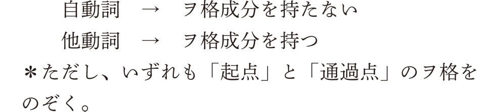では、ここからは、恒例の問題をやりながら、理解を深めていきましょう。次の動詞は自動詞でしょうか、他動詞でしょうか。答えを出してから、下の解説に進んでください。
問１：光る
「星が光る」などと言いますが、ヲ格をつけることができません。したがって、自動詞です。
問２：会う
「私は友達に（と）会う」と言いますが、ヲ格は使えませんね。したがって、自動詞になります。英語では他動詞（“meet”または“see”）ですので、注意してくださいね。
問３：曲げる
「私は針金を曲げる」などと言えます。ヲ格を持つことができるので、他動詞です。
問４：散歩する
「祖父が公園を散歩する」と言えますね。ただ、「公園」は散歩する場所（通過点）ですので、目的語ではありません。受身にもできません（×公園が祖父によって散歩される）。したがって、自動詞となります。
問５：飲む
「父がビールを飲む」と言えます。「ビール」は目的語ですね。したがって、他動詞です。
自動詞と他動詞の区別がおわかりいただけたでしょうか。ここまでは、形式的な違いを中心に見てきましたが、これからは、自動詞と他動詞の意味的な背景を考えていきましょう。
日本語の動詞の特徴として、自動詞と他動詞のペアがたくさんあることが挙げられます。ペアというのは、同じ語源からできた自動詞と他動詞という意味です。たとえば、「電気が消える－電気を消す」「お湯が沸く－お湯を沸かす」など、同じ漢字が使われるのが特徴です。このような「消える－消す」「沸く－沸かす」などのペアでは、自動詞はある現象が生じるのを、他動詞は人間がある現象を引き起こすのを、描写します。
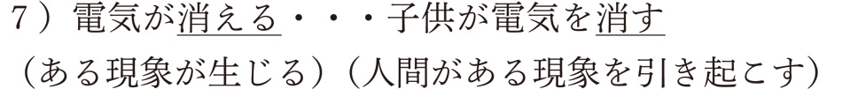ある現象が生じるということは、何らかの変化が起きるということです。つまり、自動詞では「電気が消える」という変化を表し、他動詞では、その変化を引き起こす動作（「電気を消す」）を表すとも言えるんですね。言い換えると、ある現象を描写するとき、変化に焦点を当てると自動詞が、動作に焦点を当てると他動詞が使われることになるんです。「沸く（自動詞）－沸かす（他動詞）」でも同じことが言えますね。
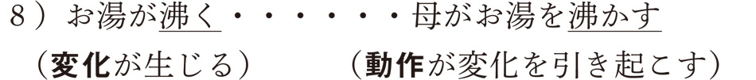このように、日本語の自動詞と他動詞のペアは変化と動作という関係で結ばれていると考えることができます。では、いつものように、ここで問題です。次の表の動詞のペアを完成させてください。すぐにできるようなら、あなたの言語感覚はなかなか鋭いですよ。
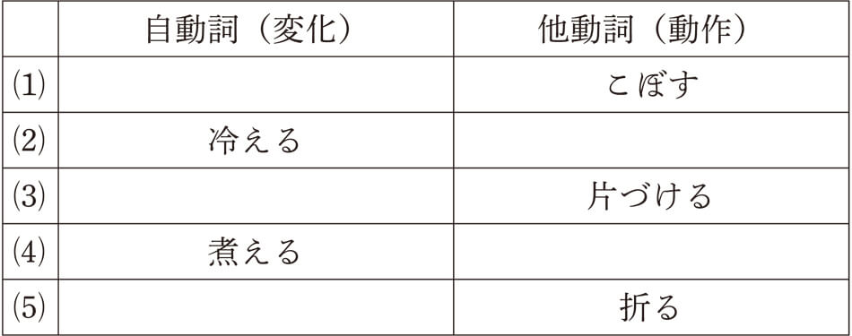答えは以下のとおりです。 こぼれる、
こぼれる、 冷やす、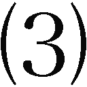片づく、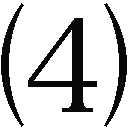煮る、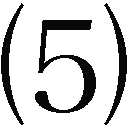折れる。いかがでしたか。全問正解できたでしょうか。すぐにではなくても、考えながらできれば大丈夫です。普段こんなことは考えたことがないわけですから、慣れるまでに時間がかかるはずです。とにかく、完成した表を眺めながら、これらのペアの動詞の「変化と動作」という関係を確認してください。「水がこぼれる－水をこぼす」「ビールが冷える－ビールを冷やす」「部屋が片づく－部屋を片づける」「じゃがいもが煮える－じゃがいもを煮る」「枝が折れる－枝を折る」。いかがですか、みな、変化と動作の関係で結ばれていますよね。
冷やす、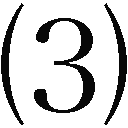片づく、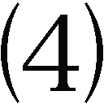煮る、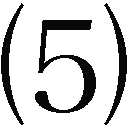折れる。いかがでしたか。全問正解できたでしょうか。すぐにではなくても、考えながらできれば大丈夫です。普段こんなことは考えたことがないわけですから、慣れるまでに時間がかかるはずです。とにかく、完成した表を眺めながら、これらのペアの動詞の「変化と動作」という関係を確認してください。「水がこぼれる－水をこぼす」「ビールが冷える－ビールを冷やす」「部屋が片づく－部屋を片づける」「じゃがいもが煮える－じゃがいもを煮る」「枝が折れる－枝を折る」。いかがですか、みな、変化と動作の関係で結ばれていますよね。
この章の冒頭で自動詞は自然中心、他動詞は人間中心と言いましたが、変化と動作はまさにこの発想に関係しているんですね。ある現象を自然のなかの変化としてとらえると自動詞が使われ、人間が関わって引き起こすととらえると他動詞が使われるんです。日本語の表現で自動詞が多用されるのは、このような日本人の発想が言語表現に色濃く投影されていると考えることができるでしょう。
この自動詞と他動詞の関係で日本語動詞を分類すると、４つのグループに分けることができます。まず、最初のグループは、これまで見てきたように自動詞と他動詞のペア（自他のペア）の動詞群です。「窓が開く－窓を開ける」に代表されます。次に、ペアが成立しない動詞群があります。自動詞だけのグループと他動詞だけのグループです。たとえば、「茂る（自動詞）」は、「木が茂る」などと言いますが、「茂る」という自動詞に対応する他動詞はありません。「茂らせる」は使役形になります。反対に、「食べる（他動詞）」は、「寿司を食べる」などと言いますが、対応する自動詞がありません。「寿司が食べられる」は受身形になります。最後に、自動詞としても他動詞としても使うことができる動詞のグループがあります。たとえば、「解散する」という動詞は、「衆議院が解散する」では自動詞として使われていますが、「首相が衆議院を解散する」では他動詞として使われています。このような動詞のことを自他動詞と呼びます。この４つの動詞群をまとめると、次の表のようになります。
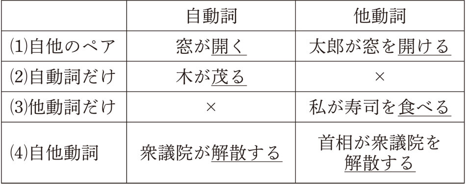この自他の関係において、ペアとなる動詞が多く、自他動詞が少ない、というのが日本語の特徴です。英語は反対に、自他動詞が多く、ペアの動詞は非常に限られていると言えます。英語の辞書で動詞の意味を調べると、日本語訳に他動詞と自動詞の両方の訳があるのに気がついたことがありませんか。たとえば、『ジーニアス英和辞典』で“open”を調べると、「（他）〈人が〉〈窓・引き出し・口など〉を開ける、〈封筒・包みなど〉を開ける」とともに「（自）〈戸・窓などが〉〔…で／…のために〕開く、〈雲などが〉広がる、〈亀裂などが〉生じる」などと書いてあります。ここに見る（他）は他動詞の用法、（自）が自動詞の用法という意味です。このように、日本語の動詞は英語とはかなり違っているんですね。
ここで、この動詞の分類をちょっと練習してみましょう。次に見る動詞はこの４つの動詞群のどのグループになるでしょうか。考えてみてください。これまでと同じように、答えを出してから、下の解説に進んでくださいね。
問１：割れる
「割れる」に対応する動詞があるかどうかを考えます。そうすると、「割る」という動詞に気がつきますね。「割れる」は、「皿が割れる」などと言うように自動詞です。「割る」は「母親が皿を割る」と言えるように、他動詞ですね。したがって、の「自他のペア」のグループになります。
問２：実現する
「実現する」に対応する動詞はあるでしょうか。「実現させる」？ これは「～させる」という使役形になるのでダメですね。では、自動詞なのか他動詞なのかを考えてみましょう。「子供の頃からの夢が実現した」などと言えますね。そうすると、自動詞ということになりますが、ちょっと待ってください。「私は長年の夢を実現した」とも言えますね。そうすると、ここでは他動詞として使われています。つまり、自動詞・他動詞どちらでも使えることから、の「自他動詞」になるわけです。
問３：置く
「置く」に対応する動詞はありそうにないですね。「私が机に書類を置く」などと言いますので、他動詞であることがわかります。目的語である「書類」を主語にして「書類が置く」とは言えませんので、「自他動詞」でもないですね。そうすると、の「他動詞だけ」の動詞グループになるわけです。
問４：成長する
「成長する」に対応する動詞はあるでしょうか。「成長させる」は使役形ですので、ダメですね。そうすると、対応する動詞はなさそうです。「子供が成長する」などと言いますので、自動詞ということになります。他動詞的に「両親が子供を成長する」とは言えませんから、自他動詞でもありません。したがって、の「自動詞だけ」のグループということになります。
自動詞と他動詞の関係から、動詞を４つのグループに分類しましたが、うまく分けることができたでしょうか。ふだんこんなことは考えたことのない方ばかりだと思いますので、難しかったかもしれませんね。
ところで、皆さんのなかには、なぜすべての動詞がペアにならないんだろうかと、疑問に感じている人がいるかもしれませんね。そのように、なぜ、どうして、と思うのが文法を考えるうえではとても重要なんです。自動詞と他動詞の使い分けが、日本人の発想と深く関係しているように、自動詞しかない、他動詞しかない、ということも、何かしらの理由がありそうですね。次項では、この理由について考えてみましょう。
もう一度、動詞の自他による分類を確認してみましょう。日本語の動詞の多くは自動詞と他動詞がペアになっています。このような動詞の呼び方にはいろいろありますが、本書では、わかりやすく自他のペアと呼びます。「開く－開ける」に代表される動詞のグループでしたね。次に、ペアがない自動詞だけ、他動詞だけという動詞のグループがありました。この動詞は、対になる動詞を持たないという意味で、それぞれ無対自動詞、無対他動詞と呼びます。無対自動詞であれば「茂る」、無対他動詞であれば「食べる」という動詞がそうでしたね。最後に、自動詞と他動詞の両方に使われる動詞のことを自他動詞と呼びました。「解散する」が自他動詞の例でしたね。そうすると、すべての日本語の動詞は、「自他のペア」「無対自動詞」「無対他動詞」「自他動詞」のうちのどれかに必ず所属するということになります。
ここで、どうしてこのようなグループに分かれるのか、考えてみましょう。必ず理由があるはずです。そのためには、考えるための材料が必要ですね。次の表にそれぞれのグループの代表例を挙げ、例文をつけましたので、ご覧になってください。
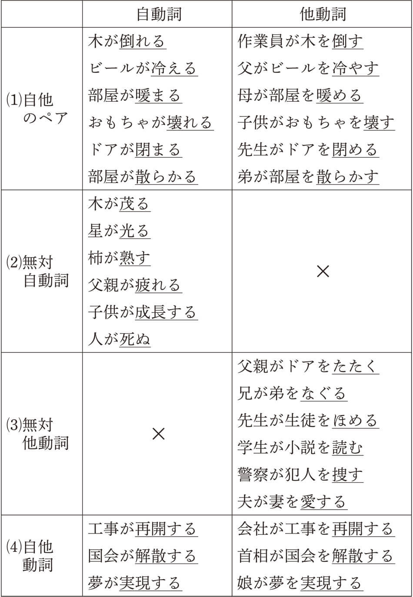この表に、なぜ無対自動詞と無対他動詞にはペアとなる動詞がないのか、その理由が潜んでいるんですが、おわかりになるでしょうか。ヒントは自動詞は変化を、他動詞は動作を表すということです。勘のいい人ならきっと気がつくはずですよ。
いかがでしょうか。ちょっと難しいかもしれませんね。それでは、私から説明していきますので、わかった人も一緒に確認してください。日本語の動詞は、自動詞と他動詞のペアが基本でしたね。そこでは、自動詞が「変化」を表し、他動詞が「動作」を表しました。の自他のペアの例文で、このことは確認できますね。「木が倒れる－木を倒す」「ビールが冷える－ビールを冷やす」「部屋が暖まる－部屋を暖める」「おもちゃが壊れる－おもちゃを壊す」「ドアが閉まる－ドアを閉める」「部屋が散らかる－部屋を散らかす」。すべての例文で変化の部分は自動詞が、動作の部分は他動詞が表しているのがわかります。
このことを頭の中にしっかり入れて、無対自動詞の欄を見てみましょう。最初の３例である「木が茂る」「星が光る」「柿が熟す」に共通する特徴は何でしょうか。そう、これらの現象は、すべて自然現象ですね。このような自然の変化はひとりでに生じるものですから、その変化を引き起こすような動作を必要としないわけですね。だから、動作を表す他動詞がないんです。
では、残りの３つの自動詞はいかがでしょうか。「父親が疲れる」「子供が成長する」「人が死ぬ」、これらは自然現象ではありませんが、人間に生じる変化を表していますね。「子供が成長する」であれば、小さい子供から大きい子供へと、「父親が疲れる」であれば、疲れていない状態から疲れた状態へと変化するわけですし、「人が死ぬ」であれば、生きていた状態から死んだ状態へと変わることになるわけです。しかし、これらの変化を引き起こすような決まりきった動作があるでしょうか。たとえば、ピストルを撃てば人間は簡単に死にますが、事件にでも巻き込まれない限り、そのような死に方をする人はあまりいないでしょう。それよりも、「疲れる」「成長する」「死ぬ」という変化は、どんな人にも自然に起きる現象として考えることができるのではないでしょうか。このことから、これらの動詞に対応する他動詞は存在しないんですね。
無対他動詞はどうでしょうか。無対自動詞とは反対に、今度は動作を表す動詞だけが存在するということになります。ということは変化を表す自動詞を持たないということですね。無対他動詞の例文を見てください。「たたく」「なぐる」「ほめる」「読む」「捜す」「愛する」に共通する特徴、それが自動詞を持たない理由になりますが、何か気がついたでしょうか。わからない人には、もう少しヒントをあげましょうね。ペアのある他動詞を見てください。他動詞は目的語（対象）に向けてある働きかけをおこなうわけですが、その目的語に生じる変化を自動詞が表していますね。わかりましたか？ そうなんです、無対他動詞の動作は必ずしも目的語に変化を起こすわけではないんです。
無対他動詞の例文を見ていきましょう。何かを「たたいた」からといって、そこにいつも物理的な変化が起きるとは限りませんね。もちろん、たたいた物がへこむことがあるかもしれませんが、いつもではないですよね。例文のように「父親がドアをたたく」ことによって、ドアがへこむわけではありません。同様に、「弟をなぐる」「生徒をほめる」「小説を読む」「犯人を捜す」「妻を愛する」の動作において、その目的語（対象）に目に見えるような変化が起きるでしょうか。起きそうもないですよね。このために、変化を表す自動詞が存在しないんです。ペアのある他動詞を見ると、必ず結果が生じるような動作「倒す」「冷やす」「暖める」「壊す」「閉める」「散らかす」となっているのがおわかりになるでしょう。
最後の自他動詞ですが、「２字漢字＋する」が多いと感じていたら、なかなかスルドイ。そうですね、この形式が多いんです。自他動詞は４つの分類のなかで数は一番少ないのですが、「２字漢字＋する」という形式が多いのが特徴です。じつは、この２字漢字はすべて中国から来た漢字なのですね。中国語では自他の区別がなく、動詞は自動詞としても他動詞としても理解されます。したがって、中国語からの漢字に「する」をつけると自他動詞になりやすい面があるようです。ただ、数はあまり多くありませんので、「２字漢字＋する」がすべて自他動詞になるわけではありません。また、このような自他動詞においても、「漢字＋する」が自動詞、「漢字＋させる」が他動詞という使い分けをする人もいます。英語をカタカナにした「オープンする」や「クローズする」も「店がオープンする－店をオープンする」「店がクローズする－店をクローズする」などと自他動詞として使うことができますね。これも、これらの英語が自他動詞であることと関係しているわけです。
自動詞と他動詞の関係、おわかりいただけたでしょうか。もちろんすべての動詞がここで説明したとおりになるわけではありませんが、少なくとも、このような傾向のもとに、日本語の自動詞と他動詞の体系ができあがっていることを理解してください。
先ほどの表をもう一度ご覧になってください。無対自動詞と無対他動詞にはそれぞれ対応する他動詞と自動詞がないため、×が入っていました。たしかに無対自動詞は自然に起きる現象（変化）だけを描写するために、原因となるような動作を必要としませんでした。しかし、人間が関わることで人工的にそのような状況を作り出すことがあります。たとえば、木は自然に成長し、茂っていくものですが、自分の家の庭で木がうっそうと茂るようにしたいと思えば、庭に木をたくさん植えればいいわけですね。この場合、家の庭に木がうっそうと茂るのは、その木を植えた人の意志によるものだと考えることができます。そうすると、これは自然現象というよりも、人為的な動作の結果であると考えられるのですが、このような動作を表す手段がありませんね。何かいい方法がないものでしょうか。じつは、このような場合、以下のように言うことができます。
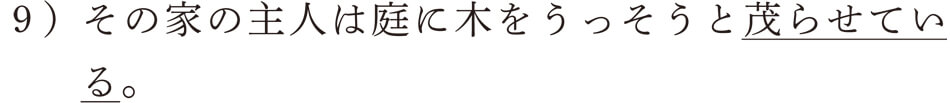ここで使われる「茂らせる」という動詞は、自動詞「茂る」の使役形ですね。本来使役形というのは、「子供に皿を洗わせる」など、誰かに何かをさせるときに使う形式ですが、ここではそのような意味はなく、他動詞のように使われています。もうおわかりですよね。使役形は、無対自動詞に対応する他動詞の代わりをすることがあるんです。
余談ですが、私の家の隣人は俳句をたしなむ人で、隣の家の庭はまさにこのような状況でした。あまり刈り込むと風情がないといって、黒竹がうっそうと茂るような庭を作っていました。大風が吹くと、この黒竹の葉がたくさん我が家の庭に吹きこまれてきて、掃除が大変だったのを思い出します。まさに、「庭に黒竹をうっそうと茂らせていた」わけです。このように、自然現象であっても、人為的に生じさせるような場合は使役形で他動詞の代用をすることができるわけです。「水たまりが凍る→冷蔵庫で水を凍らせる」「空が曇る→そのニュースに顔を曇らせる」「稲妻が光る→ワックスがけで車を光らせる」など、もともと自然現象からできた動詞でも、人為的にその現象を生じさせる意味で使われる場合は使役形で他動詞の役割を果たすことができるわけですね。
では、無対他動詞の場合はどうでしょうか。無対他動詞は無対自動詞とは反対に、動作はあるけれど、その動作によって変化が起きない場合でしたね。では、もし変化が起きたらどうするんでしょうか。たとえば、「本を読む」という動作をいくらしても、読まれた本には何の変化も起きないので、変化を表す自動詞はありませんね。しかし、もし、本が開いたまま、机の上に置いてあったら、読んだ後の変化としてとらえることが可能となります。そのような場合、「本が読まれている」と言えるでしょう。ここでは受身形が自動詞の代わりをするんですね。先ほどの表にある無対他動詞も、「たたかれる」「なぐられる」「ほめられる」「捜される」「愛される」などと受身形にすることで、動作の変化に焦点を当てた表現が可能になるんですね。このことをまとめると、次の表のようになります。
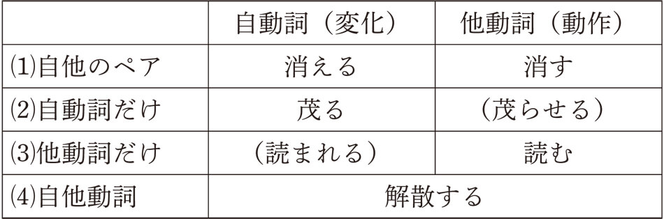このように、無対自動詞に対応する他動詞と無対他動詞に対応する自動詞を使役形と受身形が代用することで文法体系の欠落する部分を補っているんですね。
この章では、自然中心の自動詞と人間中心の他動詞の特徴について見てきました。日本語は何度も言ってきましたように、自然中心の自動詞使用が多いのが特徴です。これについては、いろいろな人が述べていて、たとえば、金谷武洋さんは、『日本語文法の謎を解く』という本のなかで、面白いことを指摘しています。金谷さんは、人間中心の英語では地名に人名をつけたがり、自然中心の日本語では空間による地名が多いことを紹介しています。たとえば、カナダの有名な地名である「バンクーバー」「ヴィクトリア」「レイク・ルイーズ」はすべて実在した人物の名前であり、それぞれ、探検家、女王、王女の名前がついているということなんですね。これに対し、カナダ人が征服する前の先住民のつけた地名は日本語と同じように、場所や自然に由来する名前が多いそうです。今でも先住民がつけた地名は残っていて、ケベック州の「ケベック」は「川幅が狭くなる所」、北米の五大湖の一つオンタリオ湖の「オンタリオ」は「美しく輝く水」、カナダ一の都市「トロント」は「人が会う所」、カナダの首都「オタワ」は「交易する場所」、ナイアガラの滝で有名な「ナイアガラ」は「水のとどろき」といった具合です。じゃあ、日本語の地名はどんなんだろうと、金谷さんが調べたところ、作家の司馬太郎さんが『峠』という小説に書いていて、何千とあるＪＲの駅名のなかで人名に由来する駅は、岡山県にある伯備線の「方谷駅」たった一つしかないそうです。そのうえ、ここで使われた人名の「方谷」も「方形（四角）の谷」に由来することから、人の名前としてではなく、地名として駅の名前になったそうなんです。そのように考えると、いかに日本では人間の名前を地名にするのに抵抗感があるのかがわかりますね。
この人間中心と自然中心の発想は、主語指向型言語と話題指向型言語という言い方で説明されることもあります。
小野隆啓さんは、「主語指向型言語である英語では、動作主に焦点を当てて、動作主が何かをするという表現をするのに対して、話題指向型言語である日本語では、動作主は表面に表さずに、あたかも『自然な成り行きでそうなった』というような表現を好むのである」と言っています。これは、たとえば、「今度引っ越すことになったので、お別れの挨拶に来ました（“I came to say 'Good-bye' because I am moving.”）」の表現に見ることができます。この表現を、「今度引っ越すことにしたので、お別れの挨拶に来ました」と言うと、何かのっぴきならぬ理由ができ、そのために引っ越すことを決断したというような強い意志を感じてしまいますね。そうでなければ、たとえ自分の意志で引っ越しを決めたとしても、日本人なら「引っ越すことになった」という自動詞的な表現を使うことが多いでしょう。英語では、もちろん“I am moving（＝I will move）”と自分の意志をはっきり示すのが普通です。
結婚式の招待状でも、「この度私たち二人は結婚式を挙げることになりました」などと書いてありますが、よくよく考えてみると、自分たちで決めたにもかかわらず、自然とそうなったかのような言い方をしていますね。もし「この度私たち二人は結婚式を挙げることにしました」なんて書かれていると、本来はやるべきものではないのだけど、やることにしたというような意味になってしまいます。その他にも、「お風呂が入りました」や「掃除が終わりました」「ご飯ができました」など、自分でやったことでも、すべて自然のなかの出来事のように表現するのが日本語の大きな特徴なんですね。
池上嘉彦さんという言語学者は『「する」と「なる」の言語学』のなかで、英語には「動作主指向的」な傾向があり、日本語には「出来事全体把握的」な傾向があると指摘しています。そして、「する」的な言語と「なる」的な言語という対立は、言語類型学的に見ても、きわめて基本的な特徴であることを示唆しています。
読者の方に誤解しないでいただきたいことは、このような自然中心の発想は、決して日本語特有の発想ではないということなんですね。つまり、世界の言語は大きく分けて、自然中心の言語と人間中心の言語に分かれ、欧米語は人間中心の言語であるのに対し、日本語は自然中心の言語に含まれるということなんです。そして、自然中心の発想がどのように言語のしくみに関係しているのかは、それぞれの言語によって異なっていると言えるわけです。日本語では特に次の章で説明する「ボイス」にこの発想が色濃く出ていますので、欧米語の発想と比較しながら、日本語の発想がどのように文法現象となって現れるのか、さらに一緒に考えていくことにしましょう。
▲